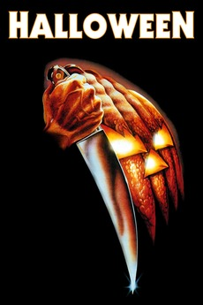
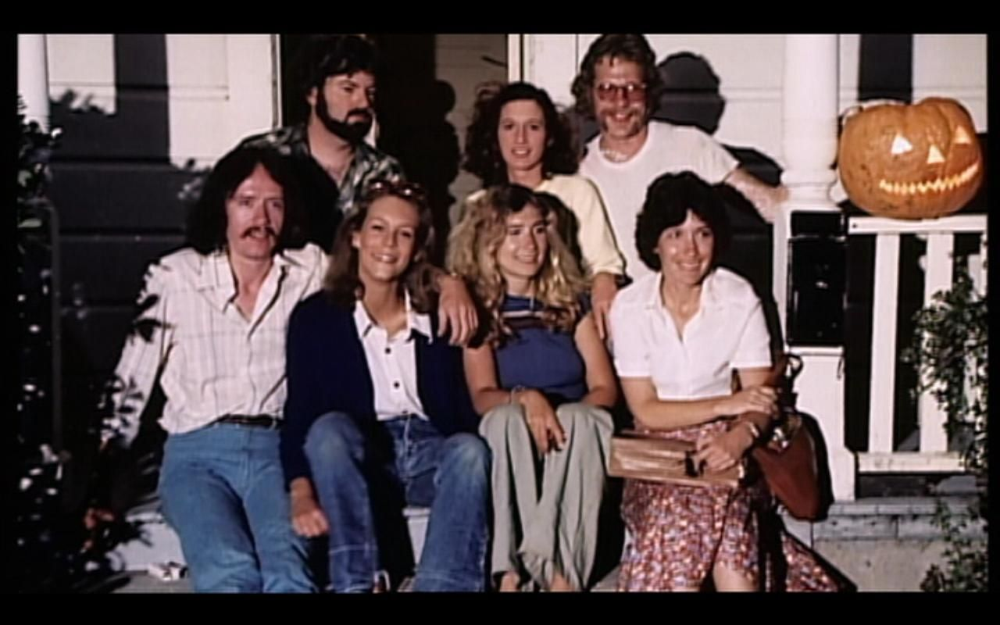
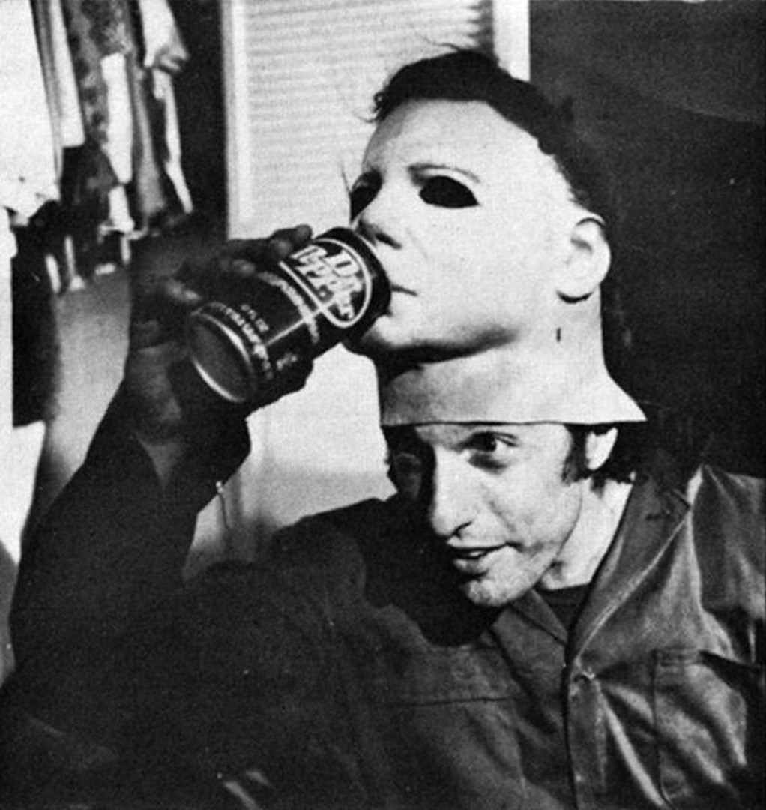

The Slasher Movie
Director: John Carpenter
Starring: Donald Pleasence, Jamie Lee Curtis, P.J. Soles, Nancy Kyes
Runtime: 1h 31m
Other indie recommendations:
Black Christmas (1974)
The Texas Chainsaw Massacre (1974)
A Nightmare on Elm Street (1984)

Production
Independent film producers Irwin Yablans and Moustapha Akkad were so impressed by John Carpenter’s Assault on Precinct 13 (1976) that they sought him out to direct a movie about a psycho killer that stalked babysitters. Carpenter and then-girlfriend Debra Hill drafted a story initially titled “The Babysitter Murders”. The budget was $300,000 and the schedule was tight. Even the actors acted as temporary crew members, moving props around for scenes. The iconic Michael Myers serial killer mask was a white-painted, slightly-melted Captain Kirk party mask.

Influence
Once again, Halloween may not have been the first slasher movie, but it was responsible for popularizing the genre, as well as many horror tropes we know today, such as the final girl and the P.O.V. shot from the perspective of the killer. The simple story of a masked killer terrorizing a peaceful suburban area stuck with viewers and critics, leading it to become the most independent film of all time and one of the most critically acclaimed films of that year. It also was the start to the longest-running and most profitable horror franchises of all time.
SOURCES:
Pics:
IMDB, Pinterest
Video:
BestClips
Info: https://halloweenmovie.fandom.com/wiki/Halloween_(1978)